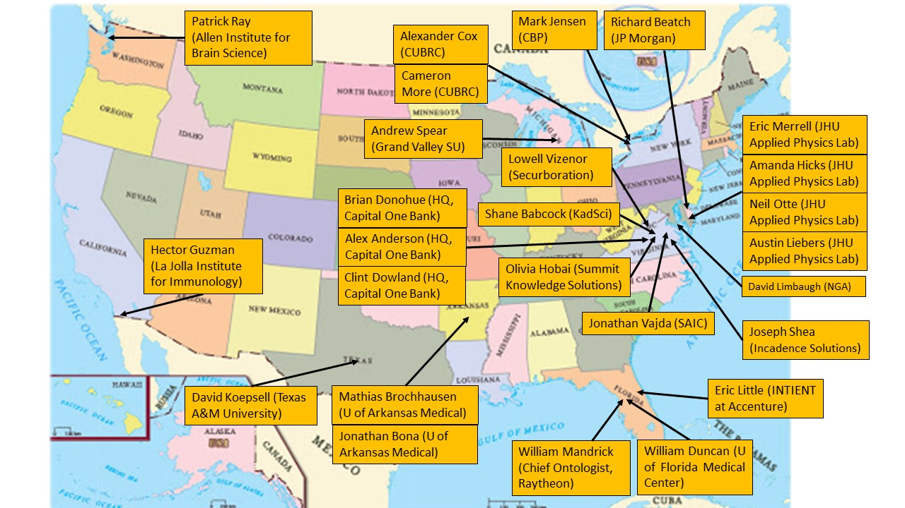

Ontology Student Showcase
The Applied Ontology graduate program has prepared students for careers in academia, industry, government, finance, healthcare, and national security.
The map below highlights a sample of organizations where graduates of the program have gone on to work.

Organizations shown represent a sample of employers of graduates from the Applied Ontology program.